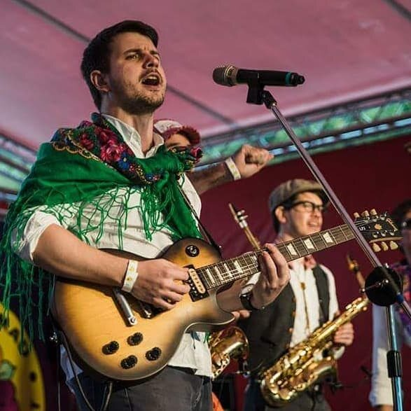

2019
November 30 · Shilin Residence, Taipei
Taipei City Government published the featured Balkan Peninsula music concert in its official program.
Balkazar live history
A Balkan music concert featured in an official Taipei City Government cultural event.
Past appearances
A look back at the shows, with photos and links to the original event pages.
← All festivals
Taipei City Government published the featured Balkan Peninsula music concert in its official program.
Want Balkazar at your event? Get in touch ↗